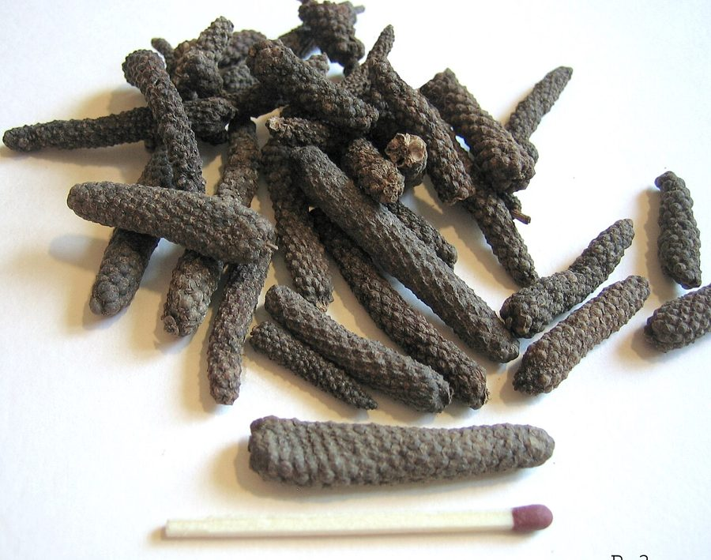

लॉन्ग पेपरLong Pepper
Piper longum · Piperaceae · FLR-0418

- Scientific name वैज्ञानिक नाम
- Piper longum L.
- Family कुल
- Piperaceae
- Hindi हिंदी
- लॉन्ग पेपर
- Local names स्थानीय नाम
- long pepper, pippali, peepli
- Status here यहाँ की स्थिति
- native
- Movement आवागमन
- Resident, here all year
- Known from कहाँ दर्ज
- Others have published records from the wider Awadh–Purvanchal plain, none yet from Basti–Ayodhya अवध–पूर्वांचल से दूसरों के प्रकाशित अभिलेख, बस्ती–अयोध्या से अभी नहीं
- IUCN IUCN
- not evaluated
- Review समीक्षा
- not yet reviewed
When to look कब देखें
Expected mainly in January, February, July, August, September, October, November, December. मुख्यतः जनवरी, फ़रवरी, जुलाई, अगस्त, सितंबर, अक्टूबर, नवंबर, दिसंबर में अपेक्षित।
Uses and possibilities उपयोग और संभावनाएँ
“Traditional medicine” means a documented traditional use, not a claim that it works. Nothing on this page is medical advice.
Drawn from the documented uses in the profile below, where each is labelled traditional, current or a research lead. All uses →
लॉन्ग पेपर / Long Pepper
Piper longum L. — Piperaceae
लॉन्ग पेपर — जिसे आयुर्वेद और बोलचाल में पिप्पली या छोटी पीपल कहा जाता है, यह नम और छायादार जंगलों, बागों और बगीचों में जमीन पर फैलने वाली या झाड़ियों पर चढ़ने वाली एक सुगंधित बेल है। इसके पत्तों में पान जैसी तीखी खुशबू होती है। इसकी सबसे मुख्य पहचान इसकी बेलनाकार बालियां हैं, जो पकने पर काली-लाल हो जाती हैं और जिनका उपयोग प्राचीन काल से मसाले और औषधि के रूप में होता रहा है।
Quick Identification त्वरित पहचान
| Feature | Description |
|---|---|
| Plant habit | Slender, aromatic, creeping and climbing perennial undershrub |
| Stems | Jointed, swollen at the nodes, rooting along lower trailing portions |
| Leaves | Alternate, dimorphic; lower cordate with deep basal sinus; upper oblong-ovate |
| Odour | Warm, pungent, aromatic pepper-like scent when crushed |
| Inflorescence | Cylindrical, erect, leaf-opposed spikes on slender peduncles |
| Spike | Female spikes cylindrical, fleshy, densely packed with minute sessile flowers |
| Fruit | Confluent, fleshy syncarp of small drupes fused into a solid cylindrical spike |
Field tip: Look for a climbing pepper vine with heart-shaped aromatic leaves, swollen nodes, and upright cylindrical catkin-like spikes smelling warmly of pepper.
हिंदी: पान जैसी खुशबू वाली पत्तियाँ, गांठों पर फूले तने और खड़ी बेलनाकार फलदार बालियां इसकी पहचान हैं।
Morphology आकारिकी
Measurement not available in consulted sources.
A slender, aromatic, creeping and climbing perennial herb or undershrub. Rootstock woody, branched, producing long trailing stems that root at the lower nodes. Stems jointed, swollen at the nodes, terete, striate, herbaceous above, woody below, young shoots minutely puberulous, dark green.
Leaves alternate, simple, distinctly dimorphic between lower creeping shoots and upper fruiting stems; lower leaves broadly ovate or cordate, deeply cordate at the base with rounded overlapping basal auricles, obtuse or shortly acuminate at the apex, long-petioled; upper flowering leaves narrower, oblong-ovate or lanceolate, cordate or rounded at the base, shortly petioled or subsessile, dark green and shining above, paler beneath, with five to seven prominent basal nerves, aromatic and pungent to the taste.
Inflorescence consisting of solitary, leaf-opposed, cylindrical, erect or ascending spikes borne on slender peduncles. Species dioecious. Male spikes longer and more slender, yellow, composed of minute flowers surrounded by peltate bracts; stamens two. Female spikes shorter, stouter, erect, cylindrical, composed of numerous minute sessile flowers with three to four papillose stigmas embedded in the fleshy axis.
Fruit a compact, fleshy, fused syncarp (fruiting spike), cylindrical, blunt at the apex, composed of numerous small globose drupes coalesced into the fleshy axis, turning dull green, then orange-red, and finally blackish-brown when dry.
हिंदी: तने गांठों पर फूले होते हैं। नीचे की पत्तियाँ दिल के आकार की और ऊपर की पत्तियाँ लंबी होती हैं। फल एक ठोस बेलनाकार बाली के रूप में होता है जो पककर काला हो जाता है।
Behaviour & Ecology व्यवहार और पारिस्थितिकी
A native tropical forest understorey vine adapted to warm, humid, shady environments across northern and eastern India. It scrambles over decomposing leaf litter and climbs low tree trunks or bushes using adventitious clinging roots produced at its swollen nodes.
The species requires perennial soil moisture, rich organic loam, and protection from direct midday sunlight. The spicy, pungent flavour of the entire plant, and particularly the fruiting spikes, is due to the alkaloid piperine along with essential volatile oils. These compounds function as chemical defenses against herbivores and fungal pathogens. The fleshy ripe fruiting spikes attract frugivorous birds, which digest the pulp and disperse the seeds.
हिंदी: यह पौधा घनी छाया और नम मिट्टी में पनपता है। तने से निकलने वाली जड़ें इसे पेड़ की छाल पर चिपकने में मदद करती हैं। इसका तीखा रस इसे बीमारियों से बचाता है।
Life Cycle / Phenology जीवन चक्र
Trailing stems lengthen actively and put out fresh green foliage with the onset of the monsoon rains in July.
Flowering begins in July and extends through August, September, and October. Spikes form opposite the leaves on flowering branchlets. Fruits mature slowly over the autumn and winter months, turning from green to reddish and dark brown from November to February. Dried spikes fall or are harvested in late winter. During the dry pre-monsoon summer, growth slows, but the perennial root system and creeping stems survive under the shelter of tree canopies.
हिंदी: बरसात में नई डालियां फूटती हैं। जुलाई से अक्टूबर तक फूल आते हैं। सर्दियों में फलियां पककर काली हो जाती हैं और गर्मियों में बेल सुप्त अवस्था में रहती है।
Associated Species / Interactions सहजीवी प्रजातियाँ
No insect that feeds on this plant is named in the sources cited here.
हिंदी: यहाँ उद्धृत स्रोतों में इसे खाने वाले किसी कीट का नाम नहीं है।
Pests and Diseases कीट और रोग
Foliage is susceptible to anthracnose leaf spot and stem rot during prolonged overcast monsoon weather. Mealybugs and scale insects occasionally attack tender shoot nodes.
हिंदी: ज्यादा दिनों तक बादल छाए रहने पर पत्तियों पर काले धब्बे और तने में सड़न की समस्या हो सकती है।
Agricultural / Human Relevance कृषि प्रासंगिकता
Chopra et al. (1956, p. 194) record that the dried unripe fruit of Piper longum (vern. Pippali) is used as an alterative tonic, and a decoction of the immature fruit and root is used in chronic bronchitis, cough, and cold. This is a record of published traditional use, not medical advice.
हिंदी: चोपड़ा और साथियों (1956) के अनुसार इसके सूखे कच्चे फल टॉनिक के रूप में, और कच्चे फल व जड़ का काढ़ा पुरानी खांसी, ब्रोंकाइटिस और जुकाम में दिया जाता है।
Expected Locally स्थानीय रूप से अपेक्षित
Not a field record. Written from published accounts for eastern Uttar Pradesh. No confirmed local sighting yet — if you have seen it, that is what the atlas needs.
अभी तक स्थानीय पुष्टि नहीं। यह विवरण प्रकाशित स्रोतों से है, किसी अवलोकन से नहीं।
Expected in moist shaded orchard understoreys, traditional homestead herbal gardens, and humid riverine woodland pockets across Basti, Ayodhya, and neighbouring districts. GBIF holds published records from the wider Awadh–Purvanchal plain, none yet from Basti–Ayodhya. The first verifiable record from the region will be a dated photograph of flowering plants or a population in a weed habitat or field border with district and coordinates.
हिंदी: बस्ती और अयोध्या के पुराने बागों की नम छाँव और घरेलू औषधीय क्यारियों में इसके मिलने की संभावना है।
Distribution वितरण
Global range: Native to South and Southeast Asia, from India and Nepal through Bangladesh, Myanmar, Thailand, and Malaysia.
In India: Native and cultivated in the Sub-Himalayan tract, the Gangetic plain, Central India, the Western Ghats, and the North-East.
In Uttar Pradesh: Distributed in the moist Tarai forest belt and maintained in traditional cultivation across eastern districts.
In Basti district / eastern UP: Expected in shaded garden plots, traditional nurseries, and damp grove understoreys.
हिंदी: यह पौधा भारत, नेपाल और दक्षिण-पूर्व एशिया के नम उष्णकटिबंधीय भागों में प्राकृतिक और घरेलू रूप से पाया जाता है।
Research Questions शोध प्रश्न
- What concentration of the bioactive alkaloid piperine is synthesized in fruits grown under alluvial orchard shade in eastern UP?
- Which micro-dipterans are the principal pollinators of the minute, crowded flowers on the cylindrical female spikes?
- How effectively does vegetative propagation by stem cuttings compare with seed propagation under local nursery conditions? / स्थानीय नर्सरी में इसके बीजों की तुलना में डालियों की कलम लगाने से कितना सफल अंकुरण होता है?
- What is the impact of heavy shade versus dappled light on the incidence of anthracnose fungal blight in cultivated vines? / घनी छाया और हल्की धूप में फफूंद जनित रोगों के प्रकोप में क्या अंतर आता है?
- Can a child smell the crushed leaf of long pepper and compare its scent to black pepper and betel leaf?
हिंदी: क्या इसकी पत्तियों की खुशबू पान और काली मिर्च जैसी लगती है और क्या तितलियाँ इस पर अंडे देती हैं?
Similar Species मिलती-जुलती प्रजातियाँ
| Species | How to tell apart | हिंदी |
|---|---|---|
| Piper betle (betel vine) | Larger stout woody climber; leaves larger, broadly ovate-cordate, cultivated for masticatory chewing | बड़ी मजबूत बेल, पत्तियाँ बहुत चौड़ी दिल जैसी और पान के रूप में खाई जाती हैं |
Field rule: Look for the creeping and climbing pepper vine with alternate cordate leaves, swollen nodes, and upright cylindrical fleshy spikes smelling of pepper.
हिंदी: गांठों पर फूले तने, पान जैसी खुशबूदार पत्तियाँ और खड़ी बेलनाकार फलदार बालियां इसे अन्य लताओं से अलग करती हैं।
Taxonomy & Classification वर्गीकरण
Original description. Described by Carl Linnaeus in 1753 in Species Plantarum, volume 1, page 29.
Subspecies. Monotypic in northern India; populations throughout its native range are treated under the typical species.
Family and order placement. Placed in family Piperaceae, order Piperales.
Phylogenetic notes. Placed within Piper, characterized by its erect cylindrical fused syncarps and dimorphic foliage.
IUCN status rationale. Not evaluated by the IUCN Red List. It is widely cultivated and distributed across South Asia, though wild forest populations are subject to over-exploitation.
हिंदी: यह पाइपेरेसी (काली मिर्च कुल) का पौधा है। लिनियस ने 1753 में इसका मूल वर्णन किया था।
Photo Gallery फोटो गैलरी
No photos yet — add field photos to media/species/long_pepper/ and run node scripts/sync_photos.js.
Photos needed आवश्यक फोटो
- [ ] Creeping habit showing swollen nodes and heart-shaped leaves (गांठों और दिल जैसी पत्तियों वाला तना)
- [ ] Upright cylindrical female flowering spike (खड़ी बेलनाकार फूलों की बाली)
- [ ] Mature dark brown fruiting syncarp (पकी हुई काली फलदार बाली)
References संदर्भ
- Linnaeus, C. (1753). Species Plantarum, vol. 1, p. 29.
- Duthie, J. F. (1915). Flora of the Upper Gangetic Plain and of the Adjacent Siwalik and Sub-Himalayan Tracts, vol. 3, part 1, p. 44.
- Hooker, J. D. (1886). The Flora of British India, vol. 5, p. 83.
- Chopra, R. N., Nayar, S. L. & Chopra, I. C. (1956). Glossary of Indian Medicinal Plants, Council of Scientific and Industrial Research, New Delhi, p. 194.
- GBIF Occurrence Data — Piper longum, India (2025).
Source file: species/flora/medicinal/long_pepper.md